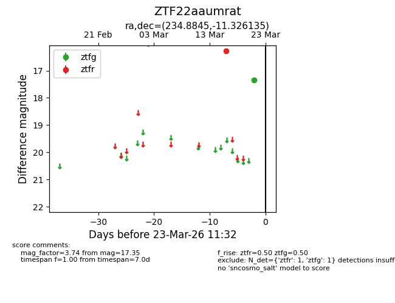
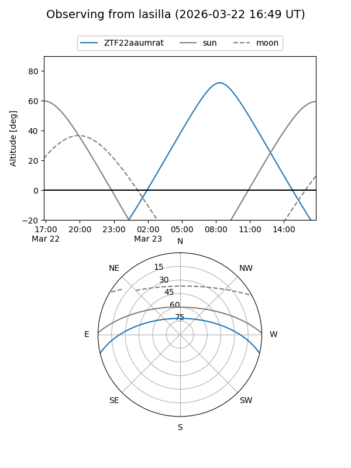
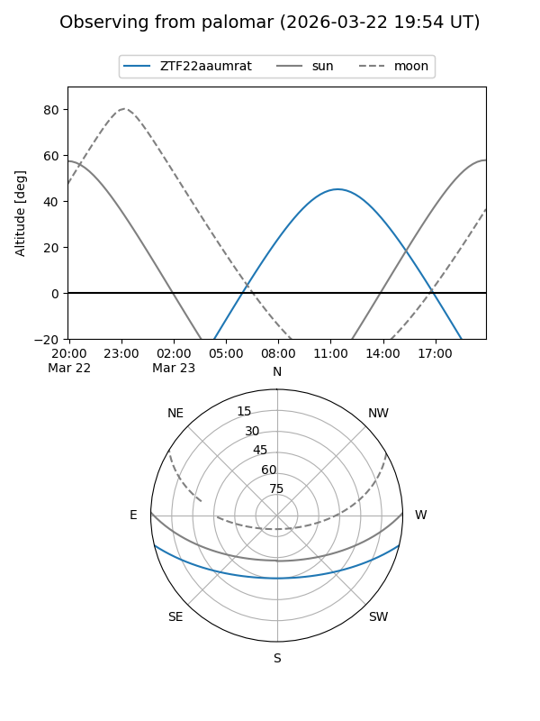

ZTF22aaumrat
Target ZTF22aaumrat at 2026-03-23 11:34
Aliases and brokers:
FINK: link
Lasair: link
ALeRCE: link
alt names
ZTF22aaumrat (ztf,fink_ztf)
Coordinates:
equatorial (ra, dec) = 234.8845,-11.32614
equatorial (HMS+DMS) = 15:39:32.29,-11:19:34.09
galactic (l, b) = (355.2548,+33.96607)
Flags:
Photometry:
last ztfg=17.35, ztfr=16.27
1 ztfg, 1 ztfr detections
Lightcurve

Visibility


Additional plots